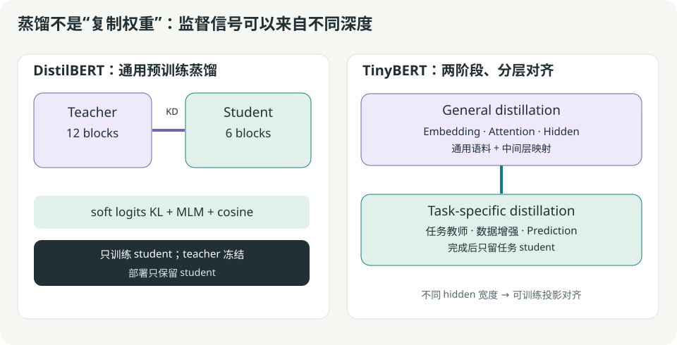
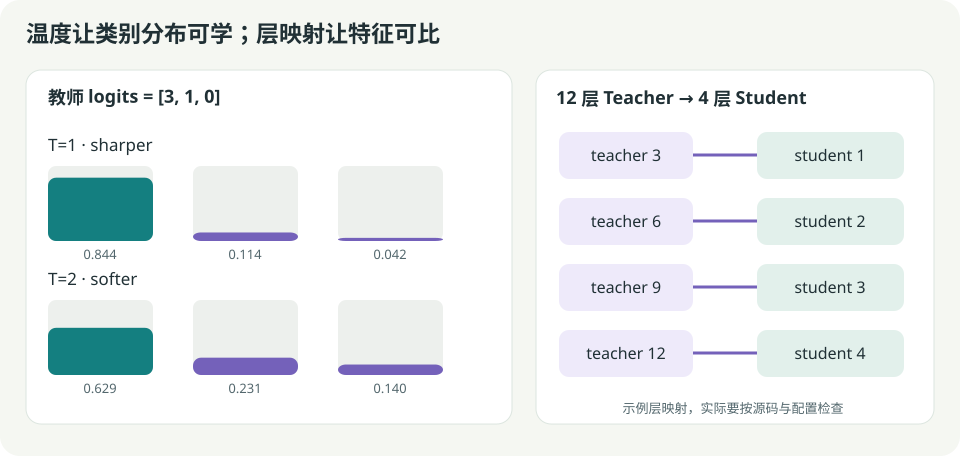

1. 把 12 层模型改成 6 层，为什么还不够
Transformer Encoder 的推理成本来自每一层 self-attention、FFN、激活和内存访问。把教师 BERT-base 的 12 个 Transformer block 减成 6 个并随机训练，通常不能保证保留原任务表现；模型的表达方式、优化路径与任务决策边界都会改变。知识蒸馏（knowledge distillation）不只复制教师的最终预测，而是把教师网络在训练时可提供的软目标、隐藏状态或注意力结构变成学生网络的额外监督。
蒸馏至少涉及两种独立选择：蒸馏发生在预训练阶段还是任务微调阶段，以及学生模仿 logits、hidden、attention 中的哪些量。DistilBERT 和 TinyBERT 对这两条轴做出了不同选择。推理时通常只保留学生，不需每次调用教师。

2. logits 温度改变的是概率分布的软硬程度
教师对一个位置或一个任务样本输出 logits zᵗ∈ℝ[V]（MLM 时 V 为词表大小；分类时 V 表示类别数），学生输出 zˢ。温度 T_d>0 将 logits 除以温度再 softmax：温度高时分布更平滑，学生能看到教师在非正确标签上的相对偏好，比如 “猫” 比 “车” 更可能是某个空缺的答案。
这是常见的温度蒸馏写法，T_d² 用于抵消高温导致的梯度尺度变化；不是所有开源实现都会乘它，也不是所有 DistilBERT 目标都要求单一的 KL 定义。PyTorch kl_div(log_softmax(student/T), softmax(teacher/T)) 的参数方向、reduction 模式，以及是否按 token 数取平均尤其需要检查，否则仅一个 batchmean 与 mean 的差别就会改变相对 loss 权重。
教师软分布应在推理/no_grad 模式计算；若教师没有冻结，梯度会改变其参数，使“固定教师”不再成立。学生是否与教师共享 tokenizer 决定两者的词表维度能否直接逐 token 比较。若 vocab ID 不同，直接 KL 同一 index 甚至是语义错误。
3. DistilBERT：预训练期间同时模仿三种信号
DistilBERT 的核心训练不是先针对每个情感分类任务单独微调教师再蒸馏，而是预训练阶段把教师的通用知识传给更小的模型。原论文用三项训练信号：用于词预测的 masked language modeling loss、学生与教师输出分布的 distillation loss、以及最后隐状态的 cosine embedding loss。这三个目标约束的是不同层面。
DistilBERT-base 通常采用较浅的 6 层 Transformer，相对于 BERT-base 的 12 层；它没有原始 BERT 的 NSP 目标，也不是简单保留完全相同的所有 embedding、pooler 和 task head。原始论文报告参数约减少 40%，速度约提升 60%，保留约 97% 的特定语言理解评估能力，这些是论文所报配置与测量协议，不能直接转译成任意 GPU batch、中文领域或单任务都恰好快 60%。
初始化也属于配方：学生可以使用教师隔层参数来获得良好起点。即便如此，训练损失仍需真正优化；仅复制每两层一次的权重不是完整的 DistilBERT 训练。
4. TinyBERT：中间层结构和两个训练阶段同样重要
TinyBERT 强调为 Transformer 设计的中间层蒸馏。除了输出 logits，它还对齐词 embedding、每层 self-attention probability/score 结构、隐藏表示，并在不同配置中做 prediction-layer distillation。学生与教师深度、宽度可能不同，因此要定义教师层到学生层的映射 g(m)，以及把学生 hidden width 投影到可比较维度的变换 W_h。
论文采用两个阶段：general distillation 在大规模无标签语料上教学生一般语言特征；task-specific distillation 使用特定下游任务的教师及任务数据，把决策行为和内部表示进一步迁移到学生。后者可能结合数据增强；不能把该阶段额外数据、增广设置抹掉再把最终结果归结为“多蒸馏了 attention 就赢了”。
若教师 12 层、学生 4 层，一个常见示例映射可能比较第 3、6、9、12 层与学生第 1、2、3、4 层；但论文实际 layer mapping/embedding 对齐还涉及索引和配置，不能把这组数字当成所有 TinyBERT checkpoint 固定的层号。

6. 训练流程：何时使用教师，何时只留学生
预训练阶段先准备并固定 teacher checkpoint、学生架构和相容 tokenizer，将训练文本输入 teacher 和 student，收集需要蒸馏的监督信号。对于 task-specific 阶段，再建立任务教师（通常已微调）与学生的对应输出头。如果教师和学生使用不同的 label mapping，蒸馏的类别 logits 即使形状一致也可能对错类别。
训练时学生的梯度来自多个目标加权组合，权重和 loss normalization 会影响优化；对某个目标误设 100 倍量纲可能淹没其他目标。完成后部署只保留学生模型以及正确 tokenizer 与任务头；不应在线运行 teacher 额外推理，除非把它设计成另一个蒸馏/校验系统。
7. 如何比较 6 层与 4 层“谁更好”
TinyBERT 论文报告一个 4 层配置在特定 GLUE 汇总上达到教师 BERT-base 约 96.8% 的水平，并报告模型体积与推理速度的对照（见原论文摘要与结果表）；这不是所有任务都有 96.8% accuracy，也不是与 DistilBERT 的不同论文平台实测速度可直接横比。对实际目标，需要分别记录参数量、磁盘大小、峰值 RAM、训练成本、batch=1 的 CPU/移动端延迟、batch>1 吞吐。
有蒸馏数据增强时尤其应记录任务划分与教师是否接触验证/测试样本。使用同一个教师训练语料不等于公平比较，训练 epoch、优化器和 tokenizer 都可能不同。蒸馏的目的通常是在可接受质量下改变资源-质量 Pareto 前沿，而非给小模型一个“永远无损”的理论保证。
8. 交互一：软标签如何暴露次优类别的信息
教师 logits 例子：[3,1,0]
这些是教学 logits；看温度如何改变概率，不是具体教师网络输出。
硬标签 argmax：类别0=1，其他=0。 学生只能从标签看到第一类正确，没有教师对其余类的软偏好。 蒸馏会进一步比较完整概率分布。
9. 交互二：训练配方按模型分流
选择蒸馏路线
抽象流程只显示各方法的主要目标与训练阶段，不是可直接运行的官方训练脚本。
DistilBERT：原始教师 BERT → 6 层学生。 预训练损失：soft logits KD + MLM + hidden cosine。 学生训练好后，可在下游任务上独立微调。
10. 错误实现为何可能训练得很好却毫无意义
- 把不同 tokenizer 的同一词表 ID 直接执行 KL，会让学生去拟合不对应的词。
- 将 padding attention logits 的极大负数输入 MSE，可产生数值爆炸或 NaN。
- 没冻结教师或把 teacher logits 当作 student logits，容易出现“损失下降”却没有知识迁移。
- 把教师 test 集指标和学生 dev 集指标放入同一条表格，或把 “97% language ability” 当成通用 accuracy。
关键结论
- DistilBERT 在通用预训练中使用 MLM、soft targets 与 hidden cosine，多于“把层数减半”。
- TinyBERT 强化中间层 attention/hidden 对齐，并区分通用与任务专用两阶段蒸馏。
- 教师与学生 tokenizer、hidden 宽度、loss reduction 与 padding mask 必须逐项匹配。
- 论文报告的参数、性能比例与速度都绑定具体硬件与数据协议。
论文与官方实现
- Sanh et al., DistilBERT，§3, triple loss, §4 eval。
- Jiao et al., TinyBERT，§2–3, Figure 1, experiments。
- TinyBERT 官方源码，general and task distillation scripts。
- Transformers DistilBERT 模型说明，checkpoint and model heads。